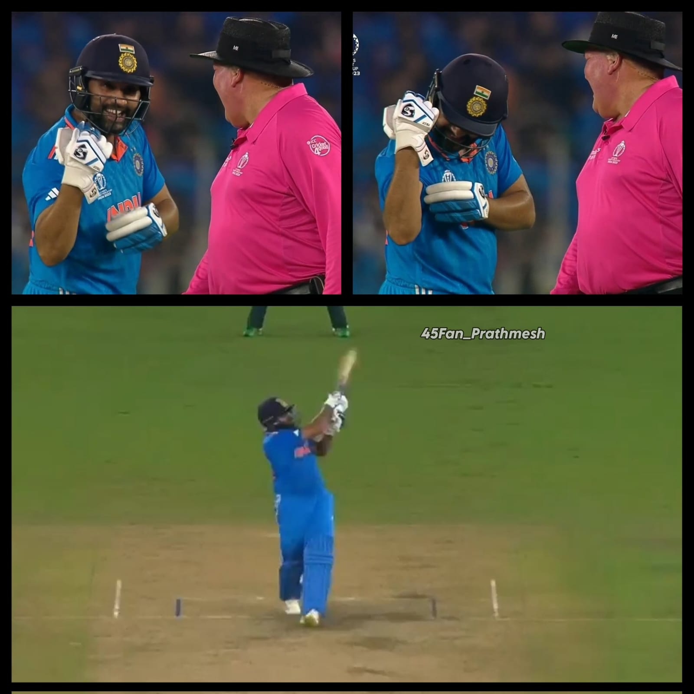

India's domination over pakistan in WC's continues
India's amazing run at the World Cup continues as they beat arch-rivals Pakistan by seven wickets to make it 8-0 in World Cups between the two. This kept India's winning momentum going in the World Cup with three wins in three matches.
Venue: Narendra Modi Stadium, Ahmedabad

India won the toss and opt to bowl
Pakistan Skipper Babar Azam and wk Rizwan managed to build the innings.
After the dismissals of both the batsman Indian bowlers took the charge and restricted them to a low total.
All Indian bowlers took 2 wickets each.
In the chase Captain Rohit Sharma fired again on the Pak bowling line up scored blistering 86.
Shreyas Iyer and KL Rahul finished the proceedings.